Forward From
Introdução
Este documento explora a utilização da técnica de rastreabilidade "forward-from", um aspecto essencial no desenvolvimento de sistemas. Pode-se dizer que a rastreabilidade de requisitos é fundamental, pois facilita a ligação e o acompanhamento dos requisitos desde a fase inicial de definição, permitindo também um monitoramento contínuo ao longo de toda a vida de um determinado sistema.
Essa metodologia proporciona uma visão detalhada sobre a origem e os impactos de cada requisito, o que contribui para a manutenção da qualidade, a gestão eficaz de modificações e o alinhamento constante com as expectativas do usuário ou cliente. Ao adotar a abordagem forward-from, o objetivo é proporcionar conexões claras entre os requisitos, o design do sistema e as respectivas atribuições [1].
Metodologia
Optou-se por utilizar a abordagem da matriz de rastreabilidade, fazendo a utilização de referências cruzadas [1], utilizada aos requisitos levantados e as documentações/artefatos gerados a partir dos processos de elicitação e posteriormente também na modelagem de requisitos e métodos ágeis. A conexão entre um requisito e um tipo de artefato não segue uma correspondência exclusiva, ou seja, um requisito pode se refletir em diversos documentos/artefatos, como, por exemplo, em diversos dos casos de uso. A Tabela 1 torna possível a visualização da matriz de rastreabilidade, verifica-se na observação que as linhas estão relacionadas a cada um dos requisitos e cada coluna mostra os artefatos produzidos a partir desses requisitos. Os requisitos, como dito anteriormente, podem estar sendo utilizados para diversos artefatos como, por exemplo, histórias de usuário, léxicos, casos de uso etc. Todos estão devidamente identificados na tabela.
No que tange a rastreabilidade dos Elos, usou-se o meta-modelo produzido por Toranzo. Seguindo a ideia do modelo existe a possibilidade de separar os requisitos que foram elicitados em níveis e elos. De acordo com Serrano [2], são os níveis:
- Ambiental: Dados correlacionados com questões de ambiente e contexto no qual as organizações podem estar introduzidas;
- Organizacional: Se trata de informações provenientes propriamente da organização;
- Gerencial: Dados gerenciais de projetos;
- Desenvolvimento: Dados relacionados com os vários artefatos e documentações produzidos a partir do processo de desenvolvimento.
Já o que se refere aos elos de rastreabilidade temos, de acordo com Serrano [2], que os mais importantes são:
- Satisfação: O grau de satisfação gerada pela classe destino influencia na classe de origem;
- Recurso: Mostra as dependências existentes de recursos da classe de origem para com a classe destino;
- Responsabilidade: Mostra as responsabilidades, participações e também ações dos indivíduos nos artefatos;
- Representação: Registra a maneira como os requisitos são expressas ou estruturadas em outras linguagens;
- Alocado: Relaciona uma determinada classe original para uma classe de destino que representa componentes de sistemas/subsistemas;
- Agregação: Denota o que se refere as composições de elementos.
Matriz de Rastreabilidade Foward From
A Tabela 1 apresenta a matriz de rastreabilidade Forward From. Para melhor entendimento, a matriz contêm as seguintes informações:
- ID: apresenta o identificador único relacionado ao requisito (RF - Requisito funcional; RNF - Requisito não funcional);
- Descrição: indica a descrição do requisito;
- Implementado: situação de implementação do requisito (Sim ou Não);
- Artefatos: apresenta os artefatos relacionados ao requisito;
- Pós-rastreabilidade: implementação do requisito, se possível (Forward From);
- Elos: ligação/relacionamentos entre os requisitos e artefatos.
Na coluna Elos, é possível identificar o tipo de elo e o requisito com qual ele se relaciona.
Tabela 1 - Matriz de Rastreabilidade Forward From do Meu INSS
| ID | Descrição | Implementado? | Artefatos | Pós-rastreabilidade (Forward From) | Elos |
|---|---|---|---|---|---|
| RF01 | O aplicativo emite e permite consulta a extratos e pagamentos. | Sim | Backlog e Histórias de Usuário. | 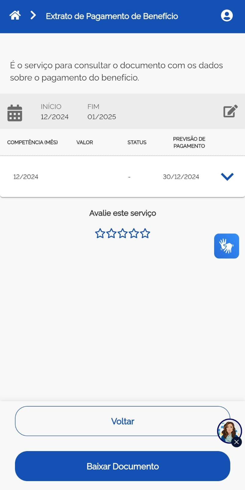 | ELOF01 - Alocado (RF02) |
| RF02 | O aplicativo permite simular a aposentadoria. | Sim | Casos de Uso, Cenários, Léxicos e Histórias de Usuário. | 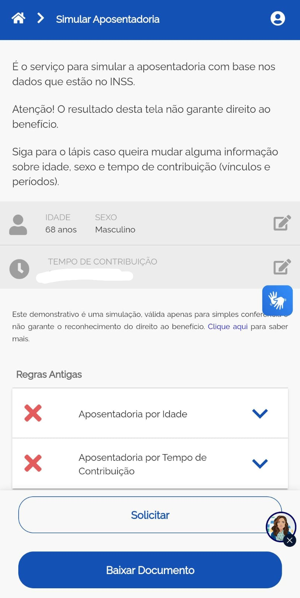 | ELOF02 - Recurso (RF03) |
| RF03 | O aplicativo permite solicitar pedidos. | Sim | Léxicos e Histórias de Usuário. | ELOF03 - Representação (RF04) | |
| RF04 | O aplicativo deve ser integrado com outros sistemas, como o sistema jurídico. | Não | Histórias de Usuário | - | ELOF04 - Alocado (RF01) |
| RF05 | O aplicativo permite solicitar auxílio doença. | Sim | Histórias de Usuário | ELOF05 - Agregação (RF03) | |
| RF06 | O aplicativo permite verificar previsão de pagamento. | Sim | Histórias de Usuário | 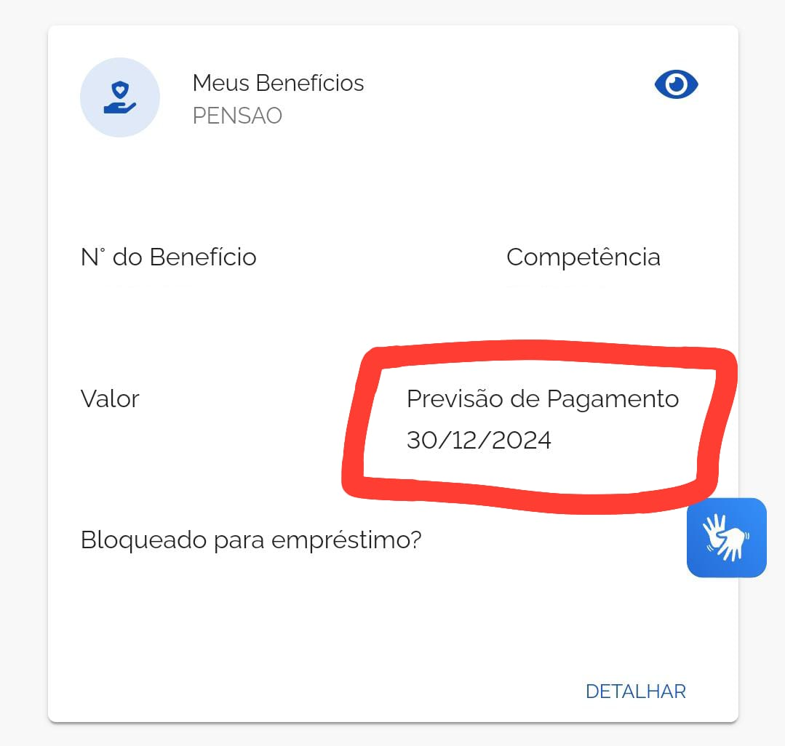 | ELOF06 - Satisfação (RF07) |
| RF07 | O aplicativo deve possuir filtro de pesquisa assertivo. | Não | Léxicos, Histórias de Usuário | - | ELOF07 - Satisfação (RF08) |
| RF08 | O aplicativo deve possuir suporte adequado. | Não | Histórias de Usuário | - | ELOF08 - Satisfação (RF07) |
| RF09 | O aplicativo deve ser claro com relação a especificação para auxílios doenças e as modalidades de análise (online ou presencial). | Não | Histórias de Usuário | - | ELOF09 - Satisfação (RF08) |
| RF10 | O aplicativo deve avisar sobre mudanças e notícias sobre legislação previdenciária. | Não | Histórias de Usuário | - | ELOF10 - Satisfação (RF08) |
| RF11 | O aplicativo deve mostrar o impacto que a contribuição do usuário está causando no seu benefício. | Não | Casos de Uso, Cenários, Léxicos e Histórias de Usuário | - | ELOF11 - Agregação (RF08) |
| RF12 | O usuário poderá ter acesso ao histórico completo de contribuições do segurado (CNIS). | Sim | Léxicos e Histórias de Usuário | 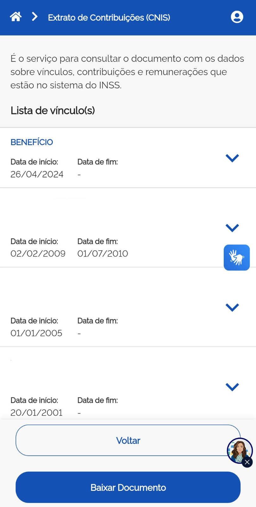 | ELOF12 - Alocado (RF11) |
| RF13 | O aplicativo permite acessar comunidades para os próprios usuários se ajudarem. | Não | Casos de Uso, Léxicos e Histórias de Usuário. | - | ELOF13 - Satisfação (RF08) |
| RF14 | O aplicativo possui assistente virtual com simulações de diferentes cenários previdenciários. | Não | Histórias de Usuário. | - | ELOF14 - Satisfação (RF08) |
| RF15 | O aplicativo deve permitir agendamento de perícias e atendimentos. | Sim | Histórias de usuário | ELOF15 - Agregação (RF03) | |
| RF16 | O aplicativo deve enviar notificações sobre pendências, prazos e novas regras. | Sim | Léxicos, Histórias de usuário. | 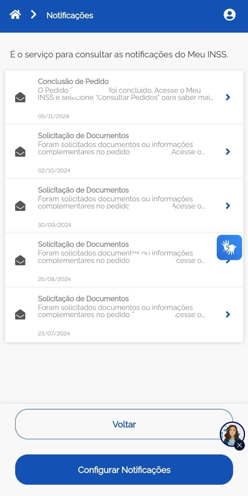 | ELOF16 - Satisfação (RF08) |
| RF17 | O aplicativo deverá permitir bloqueio e desbloqueio de benefícios pelo aplicativo. | Sim | Histórias de usuário | ELOF17 - Responsabilidade (RF20) | |
| RF18 | O aplicativo deverá mostrar critérios de carência de forma clara. | Sim | Histórias de Usuário | 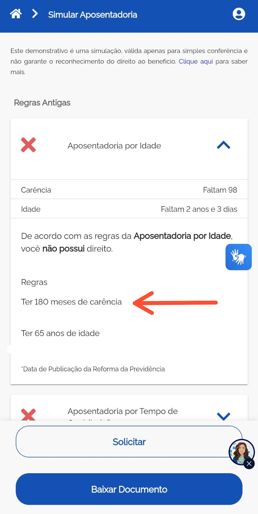 | ELOF18 - Agregação (RF20) |
| RF19 | O usuário poderá enviar documentos digitalizados. | Sim | Léxicos e Histórias de Usuário. | 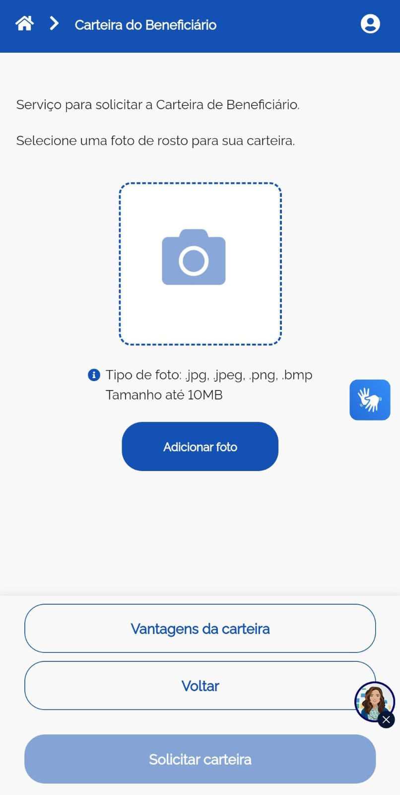 | ELOF19 - Responsabilidade (RF17) |
| RF20 | O usuário poderá solicitar benefícios pelo aplicativo. | Sim | Léxicos e Histórias de Usuário. | 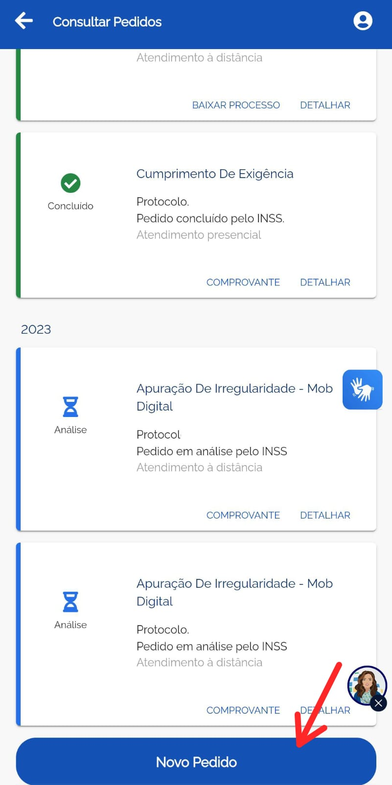 | ELOF20 - Resposa (RF20) |
| RF21 | O aplicativo deve mostrar status de solicitações e benefícios em andamento. | Sim | Léxicos e Histórias de Usuário. | 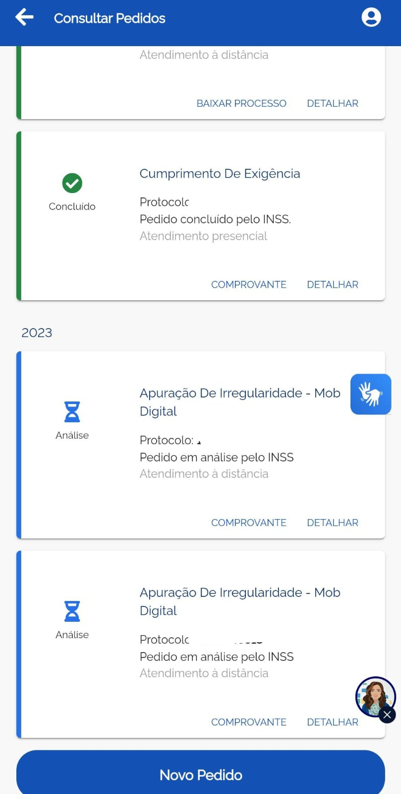 | ELOF21 - Representação (RF20) |
| RF22 | O aplicativo deve permitir alteração de dados cadastrais, como endereço e telefone. | Sim | Léxicos e Histórias de Usuário. |  |
ELOF22 - Alocado (RF20) |
| RF23 | O aplicativo deverá emitir recibos digitais para transações realizadas. | Sim | Histórias de Usuário. | 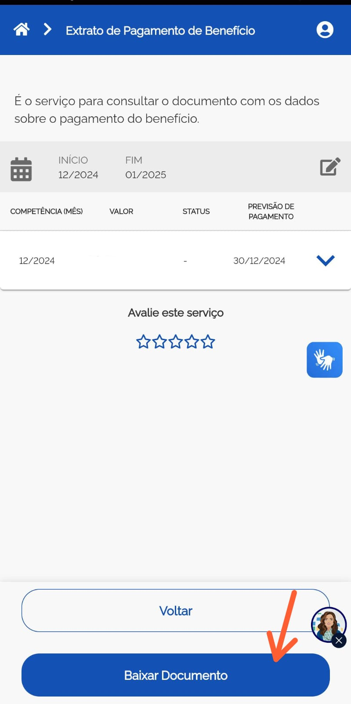 | ELOF23 - Recurso (RF08) |
| RF24 | O aplicativo deverá integrar informações sobre FGTS para consulta de saldo e movimentações. | Sim | Histórias de Usuário. | 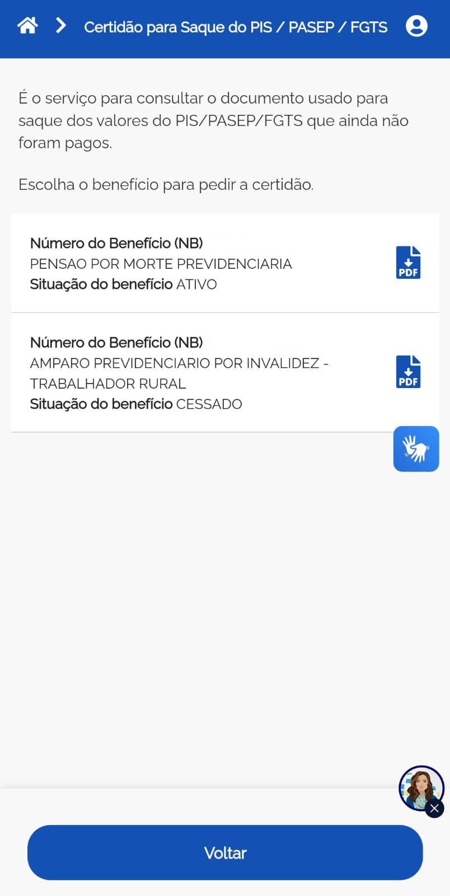 | ELOF24 - Satisfação (RF04) |
| RF25 | O aplicativo deve permitir consulta e pagamento de pensões. | Não | Casos de Uso, Cenários e Histórias de Usuário. | - | ELOF25 - Satisfação (RF01) |
| RF26 | O aplicativo deve Usar autenticação pelo Gov.br para login. | Sim | Histórias de Usuário. | ELOF26 - Satisfação (RF08) | |
| RF27 | O sistema deve mascarar dados sensíveis, como CPF e número do benefício, exibindo apenas partes relevantes para preservar a privacidade do usuário. | Não | Histórias de Usuário. | - | ELOF27 - Agregação (RF20) |
| RF28 | O sistema deve permitir que o usuário agende um horário em uma agência do INSS, escolhendo o serviço, horário, data e local diretamente no aplicativo. | Não | Casos de Uso, Cenários, Léxicos e Histórias de Usuário. | - | ELOF28 - Responsabilidade (RF29) |
| RF29 | O aplicativo deve permitir a geração de declarações, como comprovantes de recebimento de benefício ou regularidade de contribuições. | Sim | Histórias de Usuário. | ELOF29 - Agregação (RF30) | |
| RF30 | O usuário pode visualizar os benefícios com maiores detalhes. | Sim | Léxicos e Histórias de Usuário. |  |
ELOF30 - Satisfação (RF31) |
| RF31 | O usuário tem acesso a um calendário no aplicativo relacionado as suas atividades. | Sim | Léxicos e Histórias de Usuário. | 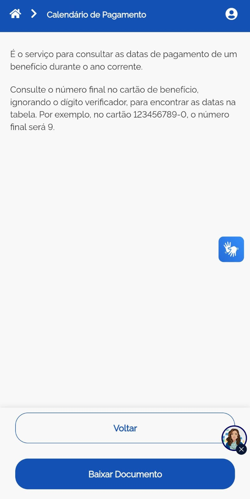 | ELOF31 - Recurso (RF21) |
| RNF01 | O aplicativo deve ser intuitivo no uso. | Não | Léxicos, Especificação Suplementar e NFR Framework | - | ELOF32 - Representação (RNF02) |
| RNF02 | O aplicativo deve possuir tutoriais explicativos de uso (por exemplo, vídeos, FAQs). | Não | Especificação Suplementar e NFR Framework. | - | ELOF33 - Recurso (RNF03) |
| RNF03 | O aplicativo deve possuir uma central de ajuda clara. | Não | Especificação Suplementar e NFR Framework. | - | ELOF34 - Alocado (RNF04) |
| RNF04 | O aplicativo deve facilitar a execução de tarefas. | Não | Especificação Suplementar e NFR Framework. | - | ELOF35 - Satisfação (RNF05) |
| RNF05 | O aplicativo deve possuir, além de termos técnicos, nomenclaturas populares para as funcionalidades do INSS. | Não | Especificação Suplementar e NFR Framework. | - | ELOF36 - Agregação (RNF06) |
| RNF06 | O aplicativo deve facilitar a busca de tarefas e funcionalidades. | Não | Especificação Suplementar | - | ELOF37 - Responsabilidade (RNF07) |
| RNF07 | O aplicativo deve ser acessível a todos os usuários. | Não | Léxicos e Especificação Suplementar. | - | ELOF38 - Representação (RNF08) |
| RNF08 | Garantir segurança dos dados com criptografia nas transações. | Sim | Especificação Suplementar. | - | ELOF39 - Recurso (RNF09) |
| RNF09 | Ser responsivo para uso em diferentes dispositivos. | Sim | - | - | ELOF40 - Alocado (RNF10) |
| RNF10 | O aplicativo deve seguir normas de acessibilidade, como suporte a leitores de tela, para ser acessível a pessoas com deficiência. | Não | Especificação suplementar, NFR Framework | - | ELOF41 - Satisfação (RNF11) |
| RNF11 | O aplicativo deve armazenar dados em conformidade com a LGPD. | Sim | Especificação suplementar, NFR Framework | - | ELOF42 - Responsabilidade - RNF12 |
| RNF12 | O sistema deve estar disponível para o usuário por no mínimo 99% do tempo de um mês, exceto em momentos de manutenção programada. | Sim | Especificação suplementar, NFR Framework | - | ELOF43 - Agregação (RF01) |
Autores: Júlia Fortunato, Cristiano Morais e Mauricio Ferreira , 2025
Bibliografia
Rastreabilidade Economia DF. Disponível em: https://requisitos-de-software.github.io/2023.2-Economia-DF/rastreabilidade/backward_from/. Acesso em 19 de Janeiro de 2025.
Referências Bibliográficas
[1]SAYÃO, Miriam; DO PRADO LEITE, Julio Cesar Sampaio. Rastreabilidade de requisitos. RITA, v. 13, n. 1, p. 57-86, 2006. [2]Slides da Aula 26 da Professora Milene Serrano. Disponível em: https://aprender3.unb.br/pluginfile.php/2972560/mod_resource/content/1/Requisitos%20-%20Aula%20026.pdf. Acesso em: 19 jan. 2025.
Histórico de Versões
| Versão | Data | Descrição | Autor | Revisor |
|---|---|---|---|---|
1.0 |
19/01/2025 | Criação do documento | Júlia Fortunato Cristiano Morais Maurício Ferreira | Ana Catarina Santos |